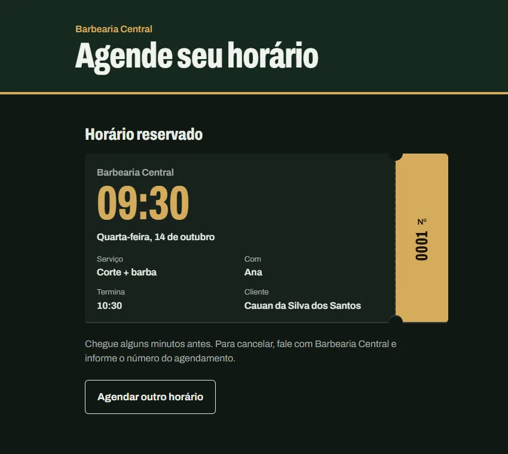

Agendamento
Para barbearias, salões e clínicas
O cliente vê só os horários realmente livres e marca em poucos cliques. A equipe tem um painel com a agenda do dia.
- Nunca dois clientes no mesmo horário
- Confirmação por e-mail, lembrete na véspera e atalho para o WhatsApp do cliente
- Cliente remarca ou cancela pelo link, sem precisar ligar
- Relatório do mês com faturamento e desempenho de cada profissional
Java, Spring Boot, React e PostgreSQL